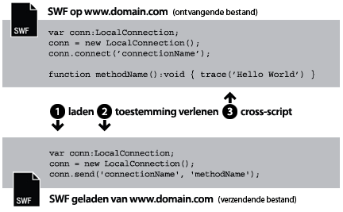
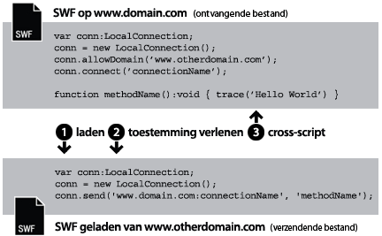
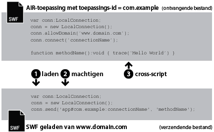
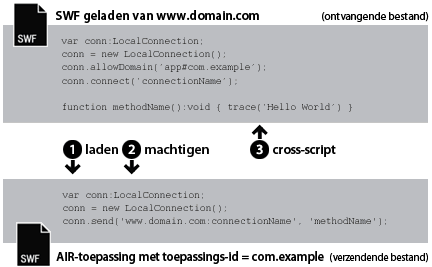
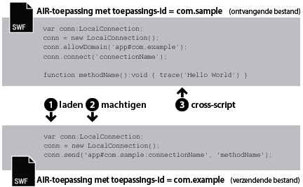

| Pakket | flash.net |
| Klasse | public class LocalConnection |
| Overerving | LocalConnection |
| Taalversie: | ActionScript 3.0 |
| Runtimeversies: | AIR 1.0, Flash Player 9, Flash Lite 4 |
- binnen een enkel SWF-bestand plaatsvinden.
- tussen meerdere SWF-bestanden plaatsvinden.
- tussen inhoud (op basis van SWF of op basis van HTML) in AIR-toepassingen plaatsvinden.
- plaatsvinden tussen inhoud (op basis van SWF of op basis van HTML) in een AIR-toepassing en SWF-inhoud die in een browser wordt uitgevoerd.
AIR-profielondersteuning: deze functie wordt ondersteund op alle desktopbesturingssystemen en op AIR for TV-apparaten, maar niet op mobiele apparaten. Met de eigenschap LocalConnection.isSupported kunt u testen op ondersteuning tijdens runtime. Zie AIR-profielondersteuning voor meer informatie over API-ondersteuning voor meerdere profielen.
Opmerking: AIR for TV-apparaten bieden alleen communicatieondersteuning voor SWF-inhoud in AIR-toepassingen.
Lokale verbindingen maken dit soort communicatie tussen SWF-bestanden mogelijk zonder gebruik te maken van fscommand() of JavaScript. Objecten LocalConnection kunnen alleen communiceren via SWF-bestanden die op dezelfde clientcomputer worden uitgevoerd, maar deze kunnen door verschillende toepassingen worden uitgevoerd. Het SWF-bestand kan bijvoorbeeld in een browser worden uitgevoerd en een SWF-bestand in Adobe AIR.
Objecten LocalConnection uit ActionScript 3.0 kunnen communiceren met objecten LocalConnection die in ActionScript 1.0 of 2.0 zijn gemaakt. Het omgekeerde geldt ook: objecten LocalConnection uit ActionScript 1.0 of 2.0 kunnen communiceren met objecten LocalConnection die in ActionScript 3.0 zijn gemaakt. Flash Player handelt deze communicatie tussen objecten LocalConnection van verschillende versies automatisch af.
Callbackmethoden kunnen op drie manieren aan een object LocalConnection worden toegevoegd:
- Maak een subklasse van de klasse LocalConnection en voeg methoden toe.
- Stel de eigenschap
LocalConnection.clientin op een object dat de methoden implementeert. - Maak een dynamische klasse die LocalConnection uitbreidt en verbind de methoden dynamisch.
Voor een juist gebruik van LocalConnection-objecten om communicatie tussen twee bestanden mogelijk te maken, is het van belang dat u de opdrachten kent die in elk bestand worden gebruikt. Het ene bestand wordt het ontvangende bestand genoemd. Dit bestand bevat de methode die moet worden aangeroepen. Het ontvangende bestand moet een LocalConnection-object en een aanroep naar de methode connect() bevatten. Het andere bestand wordt het versturende bestand genoemd. Dit bestand roept de methode aan. Het verzendende bestand moet een ander LocalConnection-object en een aanroep naar de methode send() bevatten.
Het gebruik van send() en connect() wordt bepaald door het gegeven of de bestanden zich in hetzelfde domein bevinden, in verschillende domeinen met voorspelbare domeinnamen of in verschillende domeinen met niet-voorspelbare of dynamische domeinnamen. In de volgende secties worden deze drie verschillende situaties beschreven, met codevoorbeelden voor elke situatie.
Hetzelfde domein. Dit is de eenvoudigste manier om een object LocalConnection te gebruiken, om alleen communicatie tussen objecten LocalConnection in hetzelfde domein toe te staan, omdat communicatie binnen hetzelfde domein automatisch is toegestaan. Wanneer twee bestanden uit hetzelfde domein met elkaar communiceren, hoeft u geen speciale beveiligingsmaatregelen te treffen. U geeft dezelfde waarde voor de parameter connectionName door aan zowel de methode connect() als send():

// receivingLC is in http://www.domain.com/receiving.swf
receivingLC.connect('myConnection');
// sendingLC is in http://www.domain.com/sending.swf
// myMethod() is defined in sending.swf
sendingLC.send('myConnection', 'myMethod');
Verschillende domeinen met voorspelbare domeinnamen. Wanneer twee SWF-bestanden uit verschillende domeinen met elkaar communiceren, moet u communicatie tussen de twee domeinen toestaan door de methode allowDomain() aan te roepen. Bovendien moet u de verbindingsnaam in de methode send() kwalificeren met de domeinnaam van het ontvangende object LocalConnection:

// receivingLC is in http://www.domain.com/receiving.swf
receivingLC.allowDomain('www.anotherdomain.com');
receivingLC.connect('myConnection');
// sendingLC is in http://www.anotherdomain.com/sending.swf
sendingLC.send('www.domain.com:myConnection', 'myMethod');
Verschillende domeinen met niet-voorspelbare domeinnamen. Het kan gebeuren dat u het bestand met het ontvangende LocalConnection-object gemakkelijker overdraagbaar tussen domeinen wilt maken. Om te vermijden dat u de domeinnaam in de methode send() moet opgeven, maar om aan te geven dat het ontvangende en het verzendende LocalConnection-object zich niet in hetzelfde domein bevinden, plaatst u de een onderstreepteken (_) vóór de verbindingsnaam in zowel de aanroep van connect()als van send(). Om communicatie tussen de twee domeinen mogelijk te maken, roept u de methode allowDomain() aan en geeft u de domeinen door vanwaar u aanroepen van LocalConnection wilt toestaan. U kunt ook het jokerteken (*) als argument doorgeven om aanroepen vanuit alle domeinen toe te staan.

// receivingLC is in http://www.domain.com/receiving.swf
receivingLC.allowDomain('*');
receivingLC.connect('_myConnection');
// sendingLC is in http://www.anotherdomain.com/sending.swf
sendingLC.send('_myConnection', 'myMethod');
Van Flash Player naar een AIR-toepassing. Een object LocalConnection dat is gemaakt in de sandbox van de AIR-toepassing gebruikt een speciale tekenreeks als verbindingsvoorvoegsel in plaats van een domeinnaam. Deze tekenreeks heeft deze vorm: app#appID.pubID, waarbij appID de toepassings-id en pubID de uitgevers-id van de toepassing is. (Gebruik alleen een uitgevers-id als de AIR-toepassing ook een uitgevers-id gebruikt.) Als een AIR-toepassing bijvoorbeeld de toepassings-id 'com.example' en geen uitgevers-id heeft, kunt u deze tekenreeks als lokale verbindingstekenreeks gebruiken: app#com.example:myConnection. De AIR-toepassing moet ook de methode allowDomain() aanroepen en het oorspronkelijke domein van de aanroepende SWF doorgeven:

// receivingLC is an AIR application with app ID = com.example (and no publisher ID)
receivingLC.allowDomain('www.domain.com');
receivingLC.connect('myConnection');
// sendingLC is in http://www.domain.com/sending.swf
sendingLC.send('app#com.example:myConnection', 'myMethod');
Opmerking: als een AIR-toepassing een SWF buiten de sandbox van de AIR-toepassing laadt, zijn de regels voor het tot stand brengen van een lokale verbinding met die SFW gelijk aan de regels voor het tot stand brengen van een verbinding met een SWF die in Flash Player wordt uitgevoerd.
Van een AIR-toepassing naar Flash Player. Wanneer een AIR-toepassing communiceert met een SWF die in de Flash Player-runtime wordt uitgevoerd, moet u communicatie tussen deze twee toestaan door de methode allowDomain() aan te roepen en het verbindingsvoorvoegsel van de AIR-toepassing door te geven. Als een AIR-toepassing bijvoorbeeld de toepassings-id 'com.example' en geen uitgevers-id heeft, kunt u de tekenreeks app#com.example aan de methode allowDomain() doorgeven. Bovendien moet u de verbindingsnaam in de methode send() kwalificeren met de domeinnaam van het ontvangende object LocalConnection (gebruik 'localhost' als domein voor SWF-bestanden die vanuit het lokale bestandssysteem zijn geladen):

// receivingLC is in http://www.domain.com/receiving.swf
receivingLC.allowDomain('app#com.example');
receivingLC.connect('myConnection');
// sendingLC is an AIR application with app ID = com.example (and no publisher ID)
sendingLC.send('www.domain.com:myConnection', 'myMethod');
Van een AIR-toepassing naar een andere AIR-toepassing. Als u wilt dat twee AIR-toepassingen met elkaar kunnen communiceren, moet u communicatie tussen deze twee toestaan door de methode allowDomain() aan te roepen en het voorvoegsel van de verzendende AIR-toepassing door te geven. Als de verzendende toepassing bijvoorbeeld de toepassings-id 'com.example' en geen uitgevers-id heeft, kunt u de tekenreeks app#com.example aan de methode allowDomain() in de ontvangende toepassing doorgeven. Bovendien moet u de verbindingsnaam in de methode send() kwalificeren met het verbindingsvoorvoegsel van het ontvangende object LocalConnection:

// receivingLC is an AIR application with app ID = com.sample (and no publisher ID)
receivingLC.allowDomain('app#com.example');
receivingLC.connect('myConnection');
// sendingLC is an AIR application with app ID = com.example (and no publisher ID)
sendingLC.send('app#com.sample:myConnection', 'myMethod');
U kunt LocalConnection-objecten gebruiken voor het verzenden en ontvangen van gegevens binnen een en hetzelfde bestand, maar dit is geen gangbare implementatie.
Zie de beschrijving van de parameter connectionName in de items LocalConnection.send() enLocalConnection.connect() voor meer informatie over de methoden send() en connect(). Zie ook de items allowDomain() en domain.
Verwante API-elementen
flash.net.LocalConnection.allowDomain()
flash.net.LocalConnection.domain
 Overerfde openbare eigenschappen verbergen
Overerfde openbare eigenschappen verbergen Overerfde openbare eigenschappen weergeven
Overerfde openbare eigenschappen weergeven| Eigenschap | Gedefinieerd door | ||
|---|---|---|---|
| client : Object
Geeft het object aan waarop callback-methoden worden aangeroepen. | LocalConnection | ||
 | constructor : Object
Verwijzing naar het klasseobject of de constructorfunctie van een bepaalde objectinstantie. | Object | |
| domain : String [alleen-lezen]
Een tekenreeks die het domein van de locatie van het huidige bestand vertegenwoordigt. | LocalConnection | ||
| isPerUser : Boolean
Geeft aan of het LocalConnection-object binnen het bereik van de huidige gebruiker is geplaatst (True) of algemeen beschikbaar voor alle gebruikers op de computer (False). | LocalConnection | ||
| isSupported : Boolean [statisch] [alleen-lezen]
De eigenschap isSupported wordt ingesteld op true als de LocalConnection-klasse op het huidige platform wordt ondersteund. Als dit niet het geval is, wordt de eigenschap ingesteld op false. | LocalConnection | ||
| Methode | Gedefinieerd door | ||
|---|---|---|---|
Maakt een object LocalConnection. | LocalConnection | ||
| addEventListener(type:String, listener:Function, useCapture:Boolean = false, priority:int = 0, useWeakReference:Boolean = false):void
Registreert een gebeurtenislistenerobject bij een object EventDispatcher, zodat de listener een melding van een gebeurtenis ontvangt. | EventDispatcher | |
Geeft een of meer domeinen op die aanroepen van LocalConnection naar deze instantie LocalConnection kunnen verzenden. | LocalConnection | ||
Geeft een of meer domeinen op die aanroepen van LocalConnection naar dit object LocalConnection kunnen verzenden. | LocalConnection | ||
Sluit een object LocalConnection (verbreekt de verbinding). | LocalConnection | ||
Bereidt een object LocalConnection voor om opdrachten te ontvangen van opdrachten die vanaf een send()-opdracht worden verstuurd (het verzendende LocalConnection-object). | LocalConnection | ||
|
Verzendt een gebeurtenis naar de gebeurtenisstroom. | EventDispatcher | |
|
Controleert of het object EventDispatcher listeners heeft geregistreerd voor een specifiek type gebeurtenis. | EventDispatcher | |
|
Geeft aan of voor een object een opgegeven eigenschap is gedefinieerd. | Object | |
|
Geeft aan of een instantie van de klasse Object zich in de prototypeketen van het object bevindt dat als parameter is opgegeven. | Object | |
|
Geeft aan of de opgegeven eigenschap bestaat en kan worden opgesomd. | Object | |
|
Verwijdert een listener uit het object EventDispatcher. | EventDispatcher | |
Roept de methode methodName aan via een verbinding die met de methode connect(connectionName) is geopend (in het ontvangende object LocalConnection). | LocalConnection | ||
|
Stelt de beschikbaarheid van een dynamische eigenschap voor lusbewerkingen in. | Object | |
|
Geeft de tekenreeksweergave van dit object weer, geformatteerd volgens de locatiespecifieke conventies. | Object | |
|
Retourneert een tekenreeksrepresentatie van het opgegeven object. | Object | |
|
Retourneert de primitieve waarde van het opgegeven object. | Object | |
|
Controleert of een gebeurtenislistener is geregistreerd bij dit object EventDispatcher of een van de voorouders voor het opgegeven type gebeurtenis. | EventDispatcher | |
| Gebeurtenis | Overzicht | Gedefinieerd door | ||
|---|---|---|---|---|
| [uitgezonden gebeurtenis] Wordt verzonden wanneer Flash Player of de AIR-toepassing de besturingssysteemfocus krijgt en actief wordt. | EventDispatcher | ||
| Wordt verzonden wanneer een uitzondering asynchroon — wordt gegenereerd, dat wil zeggen, vanuit native asynchrone code. | LocalConnection | |||
| [uitgezonden gebeurtenis] Wordt verzonden wanneer Flash Player of de AIR-toepassing de systeemfocus verliest en inactief wordt. | EventDispatcher | ||
| Wordt verzonden wanneer een aanroep van LocalConnection.send() gegevens probeert te verzenden naar een andere beveiligingssandbox. | LocalConnection | |||
| Wordt verzonden wanneer een object LocalConnection de status meldt. | LocalConnection | |||
client | eigenschap |
client:Object| Taalversie: | ActionScript 3.0 |
| Runtimeversies: | AIR 1.0, Flash Player 9, Flash Lite 4 |
Geeft het object aan waarop callback-methoden worden aangeroepen. Het standaardobject is this, de lokale verbinding die wordt gemaakt. U kunt de eigenschap client instellen op een ander object, waardoor callback-methoden voor dat object worden aangeroepen.
Implementatie
public function get client():Object public function set client(value:Object):voidGegenereerde uitzondering
TypeError — De eigenschap client moet zijn ingesteld op een object dat niet null is.
|
domain | eigenschap |
domain:String [alleen-lezen] | Taalversie: | ActionScript 3.0 |
| Runtimeversies: | AIR 1.0, Flash Player 9, Flash Lite 4 |
Een tekenreeks die het domein van de locatie van het huidige bestand vertegenwoordigt.
Als inhoud die in de application-beveiligingssandbox in Adobe AIR wordt uitgevoerd (inhoud die met de AIR-toepassing is geïnstalleerd), gebruikt de runtime de tekenreeks app#, gevolgd door de toepassings-id voor de AIR-toepassing (opgegeven in het descriptorbestand van de toepassing), in plaats van het superdomein. Een connectionName voor een toepassing met de toepassings-id com.example.air.MyApp connectionName wordt bijvoorbeeld omgezet naar "app#com.example.air.MyApp:connectionName".
In SWF-bestanden die voor Flash Player 9 of hoger worden gepubliceerd, is de geretourneerde tekenreeks het exacte domein van het bestand, subdomeinen inbegrepen. Wanneer het bestand zich bijvoorbeeld op www.adobe.com bevindt, retourneert deze opdracht "www.adobe.com".
Wanneer het huidige bestand een lokaal bestand is op de clientcomputer en in Flash Player wordt uitgevoerd, retourneert deze opdracht "localhost".
De manier waarop deze eigenschap doorgaans wordt gebruikt, is het opnemen van de domeinnaam van het verzendende object LocalConnection als een parameter voor de methode die u in het ontvangende object LocalConnection wilt aanroepen. U kunt de eigenschap ook gebruiken in combinatie met LocalConnection.allowDomain() om opdrachten uit een opgegeven domein te accepteren. Wanneer u alleen communicatie toestaat tussen objecten LocalConnection die zich in hetzelfde domein bevinden, hoeft u deze eigenschap waarschijnlijk niet te gebruiken.
Implementatie
public function get domain():StringVerwante API-elementen
isPerUser | eigenschap |
isPerUser:Boolean| Taalversie: | ActionScript 3.0 |
| Runtimeversies: | Flash Player 10.0.32, AIR 1.5.2 |
Geeft aan of het LocalConnection-object binnen het bereik van de huidige gebruiker is geplaatst (True) of algemeen beschikbaar voor alle gebruikers op de computer (False). Deze eigenschap is alleen van invloed op inhoud die op de Mac OS X wordt uitgevoerd; deze parameter wordt genegeerd op andere platforms. Verbindingen bij Windows- en Linux-besturingssystemen zijn altijd per gebruiker.
Bij Flash Player 10.0.22 en lager en bij AIR 1.5.1 en lager hebben alle LocalConnection-objecten op de Mac OS X een globaal bereik. Deze eigenschap moet altijd zijn ingesteld op True, tenzij u de compatibiliteit met eerder versies wilt behouden. Bij toekomstige releases kan de standaardwaarde van deze eigenschap worden gewijzigd in True.
De standaardwaarde is false.
Implementatie
public function get isPerUser():Boolean public function set isPerUser(value:Boolean):voidisSupported | eigenschap |
isSupported:Boolean [alleen-lezen] | Taalversie: | ActionScript 3.0 |
| Runtimeversies: | Flash Player 10.1, AIR 2 |
De eigenschap isSupported wordt ingesteld op true als de LocalConnection-klasse op het huidige platform wordt ondersteund. Als dit niet het geval is, wordt de eigenschap ingesteld op false.
Implementatie
public static function get isSupported():BooleanLocalConnection | () | Constructor |
public function LocalConnection()| Taalversie: | ActionScript 3.0 |
| Runtimeversies: | AIR 1.0, Flash Player 9, Flash Lite 4 |
Maakt een object LocalConnection. U kunt LocalConnection-objecten gebruiken om communicatie mogelijk te maken tussen verschillende bestanden die op dezelfde clientcomputer worden uitgevoerd.
Verwante API-elementen
allowDomain | () | methode |
public function allowDomain(... domains):void| Taalversie: | ActionScript 3.0 |
| Runtimeversies: | AIR 1.0, Flash Player 9, Flash Lite 4 |
Geeft een of meer domeinen op die aanroepen van LocalConnection naar deze instantie LocalConnection kunnen verzenden.
U kunt deze methode niet gebruiken om bestanden die worden aangeboden via een beveiligd protocol (HTTPS) toegang te laten bieden vanuit bestanden die via niet-beveiligde protocollen worden aangeboden. In plaats daarvan moet u de methode allowInsecureDomain() gebruiken.
Mogelijk wilt u deze methode gebruiken zodat een onderliggend bestand uit een ander domein LocalConnection-aanroepen kan uitvoeren naar het bovenliggende bestand, zonder het uiteindelijke domein te kennen waaruit het onderliggende bestand afkomstig is. Dit kan bijvoorbeeld het geval zijn wanneer u taakverdelende omleidingen of servers van derden gebruikt. U kunt dan de eigenschap url gebruiken van het object LoaderInfo dat voor het laden werd gebruikt, om het domein op te halen dat met de methode allowDomain() moet worden gebruikt. Wanneer u bijvoorbeeld een Loader-object gebruikt om een onderliggend bestand te laden, kunt u nadat het bestand is geladen de eigenschap contentLoaderInfo.url van het Loader-object controleren en het domein parseren uit de volledige URL. Wanneer u dit doet, moet u wachten totdat het bestand is geladen omdat de eigenschap contentLoaderInfo.url pas de uiteindelijke correcte waarde heeft nadat het bestand volledig is geladen.
De tegenovergestelde situatie kan zich ook voordoen: u zou een onderliggend bestand kunnen maken dat LocalConnection-aanroepen vanuit het bovenliggende bestand accepteert zonder het domein van het bovenliggende bestand te kennen. In dit geval implementeert u deze methode door te controleren of het argument van het domein overeenkomt met het domein van de eigenschap loaderInfo.url in het geladen bestand. Vervolgens parseert u het domein uit de volledige URL in loaderInfo.url. U hoeft dan niet te wachten totdat het bovenliggende bestand is geladen. Het bovenliggende bestand is immers al geladen tegen de tijd dat het onderliggende bestand wordt geladen.
Houd rekening met het beveiligingsmodel van Flash Player wanneer u deze methode gebruikt. Een object LocalConnection wordt standaard gekoppeld aan de sandbox van het SWF-bestand dat dit heeft gemaakt en interdomeinaanroepen naar objecten LocalConnection zijn niet toegestaan, tenzij u de methode LocalConnection.allowDomain() in het ontvangende bestand aanroept. In Adobe AIR is de inhoud in de application -beveiligingssandbox (inhoud die met de AIR-toepassing is geïnstalleerd), echter niet beperkt tot deze beveiligingsbeperkingen.
Lees voor meer informatie over beveiliging het onderwerp Security in het Flash Player Developer Center.
Opmerking: de methode allowDomain() heeft een andere vorm dan in ActionScript 1.0 en 2.0. In die lagere versies was allowDomain een callback-methode die u moest implementeren. In ActionScript 3.0 is allowDomain() een ingebouwde methode van LocalConnection die u aanroept. Door deze wijziging werkt allowDomain() nagenoeg hetzelfde als flash.system.Security.allowDomain().
Parameters
... domains — Een of meer tekenreeksen voor het benoemen van de domeinen vanwaar u LocalConnection-aanroepen wilt toestaan. Deze parameter kent twee speciale gevallen:
|
Gegenereerde uitzondering
ArgumentError — Alle opgegeven parameters moeten tekenreeksen zijn die niet gelijk zijn aan 0.
|
Verwante API-elementen
allowInsecureDomain | () | methode |
public function allowInsecureDomain(... domains):void| Taalversie: | ActionScript 3.0 |
| Runtimeversies: | AIR 1.0, Flash Player 9, Flash Lite 4 |
Geeft een of meer domeinen op die aanroepen van LocalConnection naar dit object LocalConnection kunnen verzenden.
De methode allowInsecureDomain() werkt hetzelfde als de methode allowDomain(), met dit verschil dat met de methode allowInsecureDomain() SWF-bestanden van niet-HTTPS-oorsprong ook LocalConnection-aanroepen kunnen verzenden naar bestanden van HTTPS-oorsprong. Dit verschil is alleen van belang wanneer u de methode allowInsecureDomain() aanroept vanuit een bestand dat is geladen met behulp van HTTPS. U moet de methode allowInsecureDomain() zelfs aanroepen wanneer u een niet-HTTPS/HTTPS-grens binnen hetzelfde domein overschrijdt. Standaard zijn LocalConnection-aanroepen vanuit niet-HTTPS bestanden naar HTTPS bestanden niet toegestaan, ook niet binnen hetzelfde domein.
Het aanroepen van allowInsecureDomain() wordt niet aanbevolen, omdat het de door het HTTPS-protocol geboden beveiliging in gevaar kan brengen. Wanneer u een SWF-bestand via HTTPS laadt, kunt u er tamelijk zeker van zijn dat er met dit bestand niet is geknoeid tijdens verzending via het netwerk. Wanneer u vervolgens een niet-HTTPS bestand de mogelijkheid biedt LocalConnection-aanroepen uit te voeren naar het HTTPS bestand, accepteert u aanroepen vanuit een bestand waarmee tijdens verzending over het netwerk geknoeid kan zijn. Daardoor is extra voorzichtigheid geboden omdat u niet kunt vertrouwen op de authenticiteit van LocalConnection-aanroepen die binnenkomen in uw HTTPS bestand.
Bestanden die via het HTTPS-protocol worden aangeboden, zijn standaard alleen toegankelijk voor andere bestanden die via het HTTPS-protocol worden aangeboden. Deze implementatie handhaaft de integriteit die door het HTTPS-protocol wordt geboden.
Het wordt niet aangeraden deze methode te gebruiken om de standaardwerking te negeren, omdat dit de HTTPS-beveiliging in gevaar brengt. Dit kan echter noodzakelijk zijn wanneer u bijvoorbeeld toegang moet bieden tot HTTPS-SWF-bestanden die voor Flash Player 9 of hoger zijn gepubliceerd vanuit HTTP-SWF-bestanden die voor Flash Player 6 zijn gepubliceerd.
Lees voor meer informatie over beveiliging het onderwerp Security in het Flash Player Developer Center.
Parameters
... domains — Een of meer tekenreeksen voor het benoemen van de domeinen vanwaar u LocalConnection-aanroepen wilt toestaan. Deze parameter kent twee speciale gevallen:
|
Gegenereerde uitzondering
ArgumentError — Alle opgegeven parameters moeten tekenreeksen zijn die niet gelijk zijn aan 0.
|
Verwante API-elementen
close | () | methode |
public function close():void| Taalversie: | ActionScript 3.0 |
| Runtimeversies: | AIR 1.0, Flash Player 9, Flash Lite 4 |
Sluit een object LocalConnection (verbreekt de verbinding). Geef deze opdracht door wanneer u niet wilt dat het object nog opdrachten accepteert, bijvoorbeeld wanneer u een opdracht connect() wilt laten uitvoeren met gebruik van dezelfde parameter connectionName in een ander SWF-bestand.
Gegenereerde uitzondering
ArgumentError — Omdat de instantie LocalConnection geen verbinding heeft, kan deze niet worden gesloten.
|
Verwante API-elementen
connect | () | methode |
public function connect(connectionName:String):void| Taalversie: | ActionScript 3.0 |
| Runtimeversies: | AIR 1.0, Flash Player 9, Flash Lite 4 |
Bereidt een object LocalConnection voor om opdrachten te ontvangen van opdrachten die vanaf een send()-opdracht worden verstuurd (het verzendende LocalConnection-object). Het object dat met de connect()-methode wordt gebruikt, heet het ontvangende object LocalConnection. De ontvangende en verzendende objecten moeten op dezelfde clientcomputer worden uitgevoerd.
Om conflictsituaties te vermijden, definieert u de methoden die zijn gekoppeld aan het ontvangende object LocalConnection voordat u deze methode aanroept, zoals getoond in het voorbeeld van de klasse LocalConnection.
Standaard wordt connectionName omgezet in de waarde "superdomain:connectionName", waarbij superdomain het superdomein is van het bestand dat de opdracht connect() bevat. Als het bestand dat het ontvangende LocalConnection-object bevat zich bijvoorbeeld op www.someDomain.com bevindt, wordt connectionName omgezet in "someDomain.com:connectionName". (Als een bestand dat in Flash Player wordt uitgevoerd, zich op de clientcomputer bevindt, is "localhost" de waarde die aan superdomain wordt toegewezen.)
Als inhoud die in de application-beveiligingssandbox in Adobe AIR wordt uitgevoerd (inhoud die met de AIR-toepassing is geïnstalleerd), gebruikt de runtime de tekenreeks app#, gevolgd door de toepassings-id voor de AIR-toepassing (opgegeven in het descriptorbestand van de toepassing), in plaats van het superdomein. Een connectionName voor een toepassing met de toepassings-id com.example.air.MyApp connectionName wordt bijvoorbeeld omgezet naar "app#com.example.air.MyApp:connectionName".
Standaard laat Flash Player het ontvangende object LocalConnection alleen opdrachten ontvangen van het verzendende object LocalConnection waarvan de naam van de verbinding ook in de waarde "superdomain:connectionName" wordt omgezet. Op die manier vereenvoudigt Flash Player de onderlinge communicatie tussen bestanden die zich in hetzelfde domein bevinden.
Wanneer u alleen communicatie implementeert tussen bestanden in hetzelfde domein, geeft u een tekenreeks op voor connectionName die niet met een onderstreepteken (_) begint en die geen domeinnaam opgeeft (bijvoorbeeld "myDomain:connectionName"). Gebruik dezelfde tekenreeks in de methode connect(connectionName).
Wanneer u communicatie implementeert tussen bestanden in verschillende domeinen, zorgt het opgeven van een tekenreeks voor connectionName die begint met een onderstreepteken (_) ervoor dat het bestand met het ontvangende object LocalConnection gemakkelijker overdraagbaar is tussen domeinen. Hier volgen twee mogelijke scenario's:
- Wanneer de tekenreeks voor
connectionNameniet met een onderstreepsteken (_) begint, wordt aan het superdomein een voorvoegsel plus dubbele punt toegevoegd (bijvoorbeeld"myDomain:connectionName"). Hoewel dit ervoor zorgt dat geen conflicten optreden tussen de verbinding en andere verbindingen met dezelfde naam in een ander domein, moet elk verzendend object LocalConnection dit superdomein opgeven (bijvoorbeeld"myDomain:connectionName"). Wanneer het bestand met het ontvangende object LocalConnection naar een ander domein wordt verplaatst, wijzigt de speler het voorvoegsel zodat dit het nieuwe superdomein weerspiegelt (bijvoorbeeld"anotherDomain:connectionName"). Alle verzendende objecten LocalConnection moeten handmatig worden bewerkt om naar het nieuwe superdomein te wijzen. - Als de tekenreeks voor
connectionNamemet een onderstreepteken begint (bijvoorbeeld"_connectionName"), wordt geen voorvoegsel aan de tekenreeks toegevoegd. Dit houdt in dat de ontvangende en verzendende objecten LocalConnection identieke tekenreeksen gebruiken voorconnectionName. Wanneer het ontvangende object gebruikmaakt vanallowDomain()om op te geven dat verbindingen van elk domein worden geaccepteerd, kan het bestand met het ontvangende object LocalConnection naar een ander domein worden verplaatst zonder dat verzendende objecten LocalConnection hoeven te worden gewijzigd.
Zie de beschrijving in het klasse-overzicht en de beschrijving van connectionName in send() en de items allowDomain() en domain voor meer informatie.
Opmerking: dubbele punten worden gebruikt als speciale tekens om het superdomein van de tekenreeks connectionName te scheiden. Een tekenreeks voor connectionName die een dubbele punt bevat, is niet geldig.
Houd bij gebruik van deze methode rekening met het beveiligingsmodel van Flash Player. Een object LocalConnection wordt standaard gekoppeld aan de sandbox van het SWF-bestand dat dit heeft gemaakt en interdomeinaanroepen naar objecten LocalConnection zijn niet toegestaan, tenzij u de methode LocalConnection.allowDomain() in het ontvangende bestand aanroept. U kunt voorkomen dat een bestand deze methode gebruikt door de parameter allowNetworking in te stellen van de tags object en embed op de HTML-pagina die de SWF-inhoud bevat.In Adobe AIR is de inhoud in de application-beveiligingssandbox (inhoud die met de AIR-toepassing is geïnstalleerd), echter niet beperkt tot deze beveiligingsbeperkingen.
Lees voor meer informatie over beveiliging het onderwerp Security in het Flash Player Developer Center.
Parameters
connectionName:String — Een tekenreeks die overeenkomt met de naam van de verbinding die is opgegeven in de opdracht send() die met het ontvangende object LocalConnection wil communiceren.
|
Gegenereerde uitzondering
TypeError — De aan de parameter connectionName doorgegeven waarde mag niet gelijk zijn aan 0.
| |
ArgumentError — Deze fout kan drie oorzaken hebben: 1) De aan de parameter connectionName doorgegeven tekenreekswaarde is gelijk aan 0. Geef een andere waarde dan 0 door. 2) De aan de parameter connectionName doorgegeven waarde bevat een dubbele punt (:). Dubbele punten worden gebruikt als speciale tekens om het superdomein te scheiden van de tekenreeks connectionName in de methode send(), niet de methode connect(). 3) De instantie DeLocalConnection is al verbonden.
|
Verwante API-elementen
send | () | methode |
public function send(connectionName:String, methodName:String, ... arguments):void| Taalversie: | ActionScript 3.0 |
| Runtimeversies: | AIR 1.0, Flash Player 9, Flash Lite 4 |
Roept de methode methodName aan via een verbinding die met de methode connect(connectionName) is geopend (in het ontvangende object LocalConnection). Het object dat met de send()-methode wordt gebruikt, heet het versturende object LocalConnection. De SWF-bestanden die de verzendende en ontvangende objecten bevatten, moeten op dezelfde clientcomputer worden uitgevoerd.
Er geldt een limiet van 40 kB op de hoeveelheid gegevens die als parameter aan deze opdracht kan worden doorgegeven. Wanneer send() een ArgumentError genereert, maar uw syntaxis correct is, probeer dan de send()-aanvragen op te delen in meerdere opdrachten, elk met een grootte van minder dan 40K aan gegevens.
Zoals is uitgelegd voor de vermelding connect(), wordt standaard het huidige superdomein aan connectionName toegevoegd. Wanneer u communicatie implementeert tussen verschillende domeinen, moet u wellicht connectionName in zowel de verzendende als ontvangende LocalConnection-objecten zodanig definiëren dat het huidige superdomein niet aan connectionName wordt toegevoegd. U kunt dit op twee manieren realiseren:
- Gebruik een onderstrepingsteken (_) aan het begin van
connectionNamein zowel het verzendende als het ontvangende object LocalConnection. In het bestand dat het ontvangende object bevat, gebruikt uLocalConnection.allowDomain()om aan te geven dat verbindingen van elk domein worden geaccepteerd. Met deze implementatie kunt u verzendende en ontvangende bestanden op elk willekeurig domein opslaan. - Neem het superdomein in
connectionNameop in het verzendende object LocalConnection, bijvoorbeeldmyDomain.com:myConnectionName. GebruikLocalConnection.allowDomain()in het ontvangende object om op te geven dat verbindingen vanaf het opgegeven superdomein worden geaccepteerd (in dit geval myDomain.com) of dat verbindingen van elk willekeurig domein worden geaccepteerd.
Opmerking: u kunt geen superdomein opgeven in connectionName in het ontvangende object LocalConnection. Dat kan alleen in het verzendende object LocalConnection.
Houd bij gebruik van deze methode rekening met het beveiligingsmodel van Flash Player. Een object LocalConnection wordt standaard gekoppeld aan de sandbox van het SWF-bestand dat dit heeft gemaakt en interdomeinaanroepen naar objecten LocalConnection zijn niet toegestaan, tenzij u de methode LocalConnection.allowDomain() in het ontvangende bestand aanroept. Voor SWF-inhoud die in de browser wordt uitgevoerd, kunt u voorkomen dat een bestand deze methode gebruikt door de parameter allowNetworking van de tags object en embed in te stellen op de HTML-pagina die de SWF-inhoud bevat. In Adobe AIR is de inhoud in de application -beveiligingssandbox (inhoud die met de AIR-toepassing is geïnstalleerd), echter niet beperkt tot deze beveiligingsbeperkingen.
Lees voor meer informatie over beveiliging het onderwerp Security in het Flash Player Developer Center.
Parameters
connectionName:String — Komt overeen met de naam van de verbinding die is opgegeven in de opdracht connect() die met het verzendende object LocalConnection wil communiceren.
| |
methodName:String — De naam van de methode die in het ontvangende object LocalConnection wordt aangeroepen. De volgende methodenamen resulteren in het mislukken van de opdracht: send, connect, close, allowDomain, allowInsecureDomain, client en domain.
| |
... arguments — Aanvullende optionele argumenten die aan de opgegeven methode worden doorgegeven.
|
Gebeurtenissen
securityError: — LocalConnection.send() heeft geprobeerd te communiceren met een SWF-bestand van een beveiligingssandbox waartoe de aanroepende code geen toegang heeft. U kunt dit probleem omzeilen in de implementatie van LocalConnection.allowDomain van de ontvanger.
| |
status: — Wanneer de waarde van de level-eigenschap status is, is de aanroep gelukt. Bij de waarde error is de aanroep mislukt. De aanroep kan mislukken wanneer het ontvangende SWF-bestand de verbinding weigert.
|
Gegenereerde uitzondering
TypeError — De waarde van connectionName of methodName is 0. Geef niet-null waarden voor deze parameters door.
| |
ArgumentError — Deze fout kan om de volgende redenen optreden: 1) De waarde van connectionName of methodName is een lege tekenreeks. Geef geldige tekenreeksen voor deze parameters door. 2) De in methodName opgegeven methode is beperkt. 3) Het bericht met serienummering dat wordt verzonden, is te groot (groter dan 40K).
|
Verwante API-elementen
asyncError | Gebeurtenis |
flash.events.AsyncErrorEventeigenschap AsyncErrorEvent.type =
flash.events.AsyncErrorEvent.ASYNC_ERROR| Taalversie: | ActionScript 3.0 |
| Runtimeversies: | AIR 1.0, Flash Player 9, Flash Lite 4 |
Wordt verzonden wanneer een uitzondering asynchroon wordt gegenereerd, dat wil zeggen, vanuit native asynchrone code.
De constanteAsyncErrorEvent.ASYNC_ERROR definieert de waarde van de eigenschap type van een gebeurtenisobject asyncError.
Deze gebeurtenis heeft de volgende eigenschappen:
| Eigenschap | Waarde |
|---|---|
bubbles | false |
cancelable | false; er is geen standaardgedrag om te annuleren. |
currentTarget | Het object dat het gebeurtenisobject actief verwerkt met een gebeurtenislistener. |
target | Het object dat de gebeurtenis verzendt. |
error | De fout die de gebeurtenis heeft geactiveerd. |
securityError | Gebeurtenis |
flash.events.SecurityErrorEventeigenschap SecurityErrorEvent.type =
flash.events.SecurityErrorEvent.SECURITY_ERROR| Taalversie: | ActionScript 3.0 |
| Runtimeversies: | AIR 1.0, Flash Player 9, Flash Lite 4 |
Wordt verzonden wanneer een aanroep van LocalConnection.send() gegevens naar een andere beveiligingssandbox probeert te verzenden.
SecurityErrorEvent.SECURITY_ERROR definieert de waarde van de eigenschap type van een gebeurtenisobject securityError.
Deze gebeurtenis heeft de volgende eigenschappen:
| Eigenschap | Waarde |
|---|---|
bubbles | false |
cancelable | false; er is geen standaardgedrag om te annuleren. |
currentTarget | Het object dat het gebeurtenisobject actief verwerkt met een gebeurtenislistener. |
target | Het netwerkobject dat de beveiligingsfout rapporteert. |
text | Tekst die moet worden weergegeven als foutbericht. |
Verwante API-elementen
status | Gebeurtenis |
flash.events.StatusEventeigenschap StatusEvent.type =
flash.events.StatusEvent.STATUS| Taalversie: | ActionScript 3.0 |
| Runtimeversies: | AIR 1.0, Flash Player 9, Flash Lite 4 |
Wordt verzonden wanneer een object LocalConnection de status meldt. Wanneer de aanroep met LocalConnection.send() lukt, is de waarde van de eigenschap level van het gebeurtenisobject status gelijk aan "status". Wanneer de aanroep mislukt, is de eigenschap level gelijk aan "error". Wanneer het ontvangende bestand de verbinding weigert, kan de aanroep mislukken zonder dat het verzendende bestand daarvan een melding ontvangt.
type van een gebeurtenisobject status.
Deze gebeurtenis heeft de volgende eigenschappen:
| Eigenschap | Waarde |
|---|---|
bubbles | false |
cancelable | false; er is geen standaardgedrag om te annuleren. |
code | Beschrijving van de status van het object. |
currentTarget | Het object dat het gebeurtenisobject actief verwerkt met een gebeurtenislistener. |
level | De categorie van het bericht, zoals "status", "warning" of "error". |
target | Het object dat zijn status rapporteert. |
Verwante API-elementen
In het SWF-bestand LocalConnectionSenderExample wordt een instantie LocalConnection gemaakt. Wanneer op de knop wordt geklikt, wordt de methode call() gebruikt voor het aanroepen van de methode lcHandler in het SWF-bestand met de verbindingsnaam "myConnection", waarbij de inhoud van TextField als een parameter wordt doorgegeven.
In het SWF-bestand LocalConnectionReceiverExample wordt een instantie LocalConnection gemaakt en wordt de methode connect() aangeroepen om dit SWF-bestand aan te duiden als ontvanger van berichten die zijn geadresseerd aan de verbinding "myConnection". Bovendien bevat deze klasse een methode public met de naam lcHandler(). Dit is de methode die wordt aangeroepen door het SWF-bestand LocalConnectionSenderExample. Bij het aanroepen wordt de tekst die als parameter wordt doorgegeven, toegevoegd aan het TextField in het werkgebied.
Opmerking: om het voorbeeld te kunnen testen, moeten beide SWF-bestanden gelijktijdig naar dezelfde computer worden geladen.
// Code in LocalConnectionSenderExample.as
package {
import flash.display.Sprite;
import flash.events.MouseEvent;
import flash.net.LocalConnection;
import flash.text.TextField;
import flash.text.TextFieldType;
import flash.events.StatusEvent;
import flash.text.TextFieldAutoSize;
public class LocalConnectionSenderExample extends Sprite {
private var conn:LocalConnection;
// UI elements
private var messageLabel:TextField;
private var message:TextField;
private var sendBtn:Sprite;
public function LocalConnectionSenderExample() {
buildUI();
sendBtn.addEventListener(MouseEvent.CLICK, sendMessage);
conn = new LocalConnection();
conn.addEventListener(StatusEvent.STATUS, onStatus);
}
private function sendMessage(event:MouseEvent):void {
conn.send("myConnection", "lcHandler", message.text);
}
private function onStatus(event:StatusEvent):void {
switch (event.level) {
case "status":
trace("LocalConnection.send() succeeded");
break;
case "error":
trace("LocalConnection.send() failed");
break;
}
}
private function buildUI():void {
const hPadding:uint = 5;
// messageLabel
messageLabel = new TextField();
messageLabel.x = 10;
messageLabel.y = 10;
messageLabel.text = "Text to send:";
messageLabel.autoSize = TextFieldAutoSize.LEFT;
addChild(messageLabel);
// message
message = new TextField();
message.x = messageLabel.x + messageLabel.width + hPadding;
message.y = 10;
message.width = 120;
message.height = 20;
message.background = true;
message.border = true;
message.type = TextFieldType.INPUT;
addChild(message);
// sendBtn
sendBtn = new Sprite();
sendBtn.x = message.x + message.width + hPadding;
sendBtn.y = 10;
var sendLbl:TextField = new TextField();
sendLbl.x = 1 + hPadding;
sendLbl.y = 1;
sendLbl.selectable = false;
sendLbl.autoSize = TextFieldAutoSize.LEFT;
sendLbl.text = "Send";
sendBtn.addChild(sendLbl);
sendBtn.graphics.lineStyle(1);
sendBtn.graphics.beginFill(0xcccccc);
sendBtn.graphics.drawRoundRect(0, 0, (sendLbl.width + 2 + hPadding + hPadding), (sendLbl.height + 2), 5, 5);
sendBtn.graphics.endFill();
addChild(sendBtn);
}
}
}
// Code in LocalConnectionReceiverExample.as
package {
import flash.display.Sprite;
import flash.net.LocalConnection;
import flash.text.TextField;
public class LocalConnectionReceiverExample extends Sprite {
private var conn:LocalConnection;
private var output:TextField;
public function LocalConnectionReceiverExample() {
buildUI();
conn = new LocalConnection();
conn.client = this;
try {
conn.connect("myConnection");
} catch (error:ArgumentError) {
trace("Can't connect...the connection name is already being used by another SWF");
}
}
public function lcHandler(msg:String):void {
output.appendText(msg + "\n");
}
private function buildUI():void {
output = new TextField();
output.background = true;
output.border = true;
output.wordWrap = true;
addChild(output);
}
}
}
Wed Jun 13 2018, 11:42 AM Z